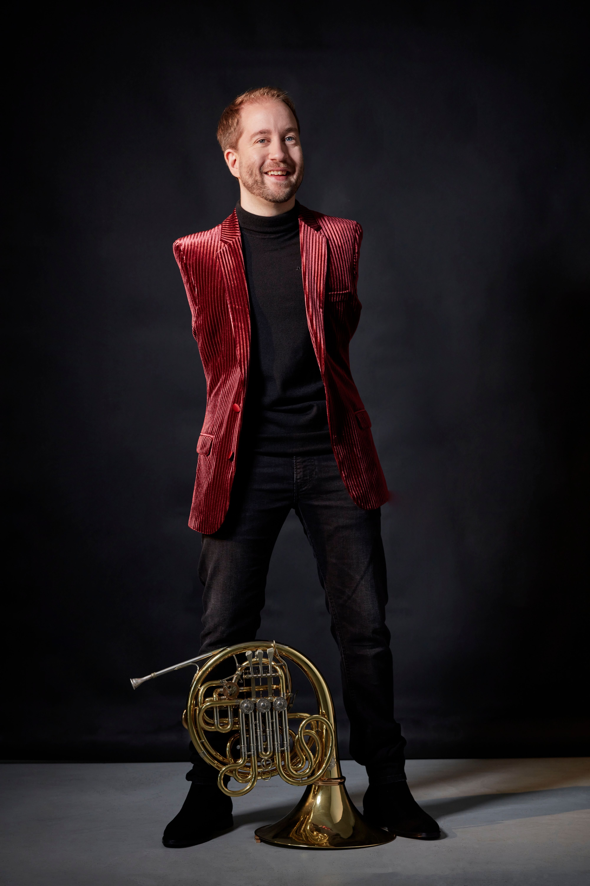

Das Horn
Ein Doppelhorn in F/B aus Messing, gebaut für lange Konzertabende. Anders spielt es ohne Hilfsmittel am Mundstück: Ansatz, Atemführung und Gehör bestimmen Ton und Intonation.

Klang aus Atem, Lippen und Gehör – ein Horn, das den Winter zum Singen bringt.
„Das Horn hat mich nie gefragt, ob ich Hände habe. Es wollte nur wissen, ob ich atmen kann.“Anders Svensson
Anders Svensson kommt 1991 in Östersund zur Welt, am Ufer des Storsjön, mitten in Jämtland. Er wird ohne Arme geboren. In seiner Familie ist das keine Tragödie, sondern eine Tatsache – und eine Aufgabe für die Werkstatt: Sein Vater ist Tischler, seine Mutter Kartografin, und seine Großmutter Ingrid hütet jeden Sommer die Kühe auf der Fäbod, der Sommerweide hoch über dem Tal.
Der erste Klang, den er bewusst hört, ist ein Lockruf. Ingrid ruft die Tiere mit dem Kuhhorn von Bergrücken zu Bergrücken, und das Echo antwortet aus dem Nebel. Mit sechs Jahren versucht Anders, es nachzumachen – nur mit dem Mund. Es gelingt. Seitdem ist sein Instrument das, was er immer dabeihat: der eigene Atem.
Mit zwölf bekommt er sein erstes Waldhorn. Der Instrumentenbauer Lennart Mattsson, ein Tüftler mit Hang zur Holzarbeit, entwickelt gemeinsam mit Anders’ Vater einen Hornhalter aus Jämtländer Birke und ein Fußpedal, mit dem Anders die Ventile über Seilzüge bedient. Es dauert drei Winter, viele Prototypen und noch mehr Geduld, bis der Aufbau so selbstverständlich funktioniert wie ein Handgriff.
Heute verbindet er klassisches Repertoire mit den Rufen seiner Heimat. In seinem Ensemble Nordljus (Nordlicht) trifft ein Kuhruf auf Barock, ein Volkslied auf Mozart. Seine Konzerte sind ruhig, warm und überraschend leise – so, wie ein Winterabend am Feuer klingt.
Was nach Technik klingt, ist vor allem Handwerk – gebaut in einer Tischlerei im Norden Schwedens.
Ein Doppelhorn in F/B aus Messing, gebaut für lange Konzertabende. Anders spielt es ohne Hilfsmittel am Mundstück: Ansatz, Atemführung und Gehör bestimmen Ton und Intonation.
Ein höhenverstellbarer Ständer aus Birkenholz mit gepolsterter Schale und Kugelgelenk. Er trägt das Horn und lässt sich in Sekunden auf Bühne, Stuhl und Raum einstellen.
Mit den Zehen des linken Fußes bedient Anders ein Pedalwerk. Seilzüge übertragen die Bewegung auf die Ventile – leise, präzise und über Jahre verfeinert.

Was Veranstalter wissen sollten – kurz und praktisch:
Die Aufnahmen folgen. Bis dahin zeigen die Platzhalter, wo Audio, Video und Cover später erscheinen.


Variationen über Rufe der Fäbod, für Horn solo und Streichquartett.

Aufgenommen in einer Holzkirche in Jämtland, mit Naturklängen zwischen den Stücken.

Mitschnitt der Winter-Tournee: ruhige Stücke, warmer Raumklang, viel Applaus.
Alle Konzerte der kommenden Saison sind ausverkauft. Hier ist der Überblick – ohne Ticketshop, ohne Anmeldung.
Konzertreihe immer samstags, 19 Uhr · mit Kakaozeremonie und Lagerfeuer
Stockholm · Kammermusiksaal
Hamburg · Kirche am Hafen
Östersund · Holzkirche am See
Orte werden bekannt gegeben
Die Platzhalter zeigen Format und Dateiname. Einfach Bild unter diesem Namen in den Ordner „images“ hochladen – es erscheint automatisch.


Alles für Veranstalter und Medien an einem Ort – die Downloads werden später freigeschaltet.
Alle Konzerte der Saison 2026/27 sind vergeben, die Warteliste für 2028 ist geschlossen. Vielen Dank für das große Interesse an der Musik aus Jämtland.
Anfrage derzeit nicht möglichAuf dieser Seite werden keine Daten abgefragt oder gespeichert.